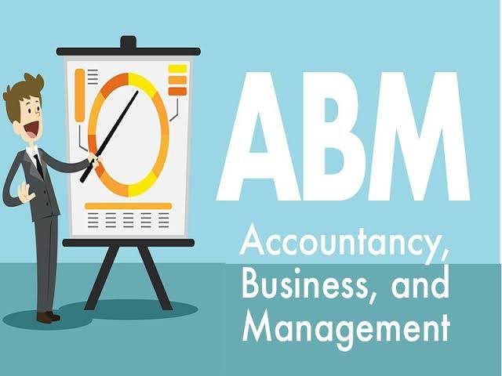
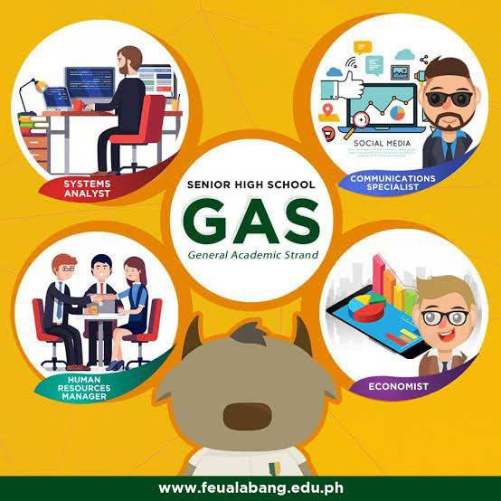
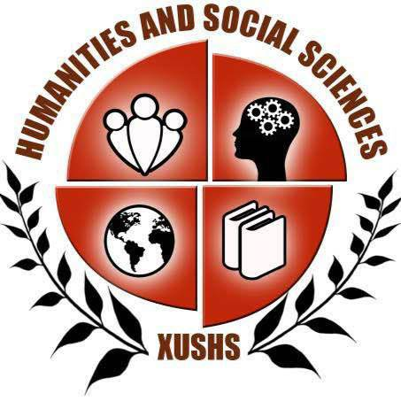
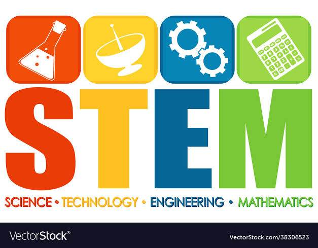

ABM
Accountancy Business Management (ABM) The Accountancy, Business, and Management Strand—or ABM strand—seeks to prepare the young business leaders of tomorrow. ABM strand paves the way for business-related college degrees. It teaches the basic concepts of financial management, accounting, and corporate operations.

GAS
General Academic Strand (GAS) General Academic Strand caters students who are not yet sure of what course or degree they want to take in college. This strand was designed so that indecisive learners can proceed with any college program.

HUMSS
The Humanities and Social Sciences (HUMSS) (HUMSS) strands equip students with a wide range of discipline with the use of their experiences and skills into the investigation and inquiry of human situations by studying its behavior and social changes using empirical, analytical, and critical method techniques.

STEM
Science, Technology, Engeneering and Math (STEM) STEM is an educational program developed to prepare primary and secondary students for college, graduate study and careers in the fields of science, technology, engineering and mathematics (STEM). In addition to subject-specific learning, STEM aims to foster inquiring minds, logical reasoning and collaboration skills.

TVL
Technical-Vocational-Livelihood (TVL) TVL Strand is designed to develop students' skills that is useful for livelihood and technical projects. It provides a curriculum that is a combination of Core Courses and specialized hands-on courses that meets the competency-based assessment of TESDA.